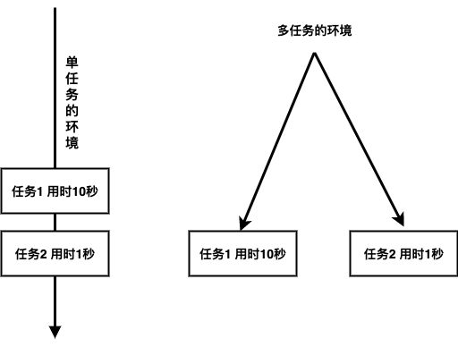
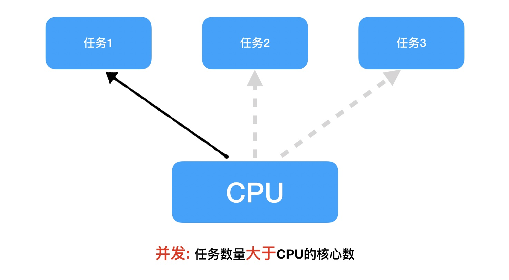
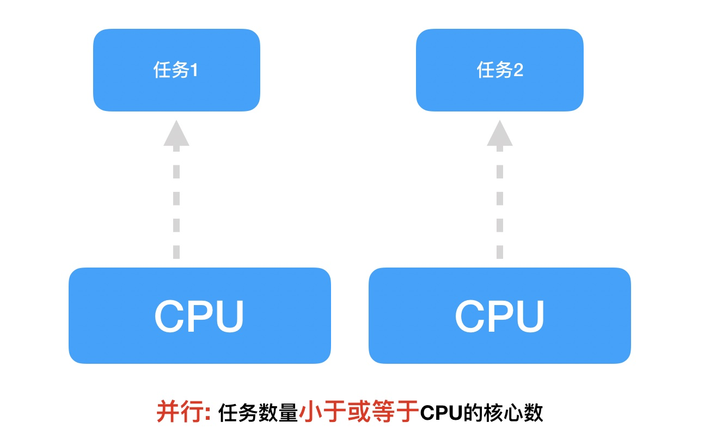

<!DOCTYPE lake>
<p data-lake-id="u557752a8" id="u557752a8"><span data-lake-id="uc7cc16b3" id="uc7cc16b3">思考：</span></p><details class="lake-collapse" data-lake-id="ubcddab9e" id="ubcddab9e" open="false"><summary class="lake-summary" data-lake-id="u113f1be0" id="u113f1be0"><strong><span data-lake-id="u58fa0954" id="u58fa0954" style="color: rgba(0, 0, 0, 0.87)">利用现学知识能够让两个函数或者方法同时执行吗?</span></strong></summary><p data-lake-id="u6b4547cf" id="u6b4547cf"><span data-lake-id="u6658df26" id="u6658df26" style="color: rgba(0, 0, 0, 0.87)">不能，因为之前所写的程序都是</span><strong><span data-lake-id="u68f4a604" id="u68f4a604" style="color: rgba(0, 0, 0, 0.87)">单任务的</span></strong><span data-lake-id="ue6f2478f" id="ue6f2478f" style="color: rgba(0, 0, 0, 0.87)">，也就是说一个函数或者方法执行完成另外一个函数或者方法才能执行，要想实现这种操作就需要使用</span><strong><span data-lake-id="ua1197ed9" id="ua1197ed9" style="color: rgba(0, 0, 0, 0.87)">多任务</span></strong><span data-lake-id="uc0464cf6" id="uc0464cf6" style="color: rgba(0, 0, 0, 0.87)">。</span></p></details><p data-lake-id="u6c34d16f" id="u6c34d16f"><strong><span data-lake-id="ueae53677" id="ueae53677" style="color: rgba(0, 0, 0, 0.87)">​</span></strong><span data-lake-id="u34949d01" id="u34949d01" style="color: rgba(0, 0, 0, 0.87)"><br/></span><span data-lake-id="ufa40a3eb" id="ufa40a3eb" style="color: rgba(0, 0, 0, 0.87)">多任务的最大好处是</span><strong><span data-lake-id="u04d45a3a" id="u04d45a3a" style="color: rgba(0, 0, 0, 0.87)">充分利用CPU资源，提高程序的执行效率</span></strong><span data-lake-id="u17f95591" id="u17f95591" style="color: rgba(0, 0, 0, 0.87)">。</span></p><p data-lake-id="u2dd9d955" id="u2dd9d955"><span data-lake-id="uabddf3cc" id="uabddf3cc" style="color: rgba(0, 0, 0, 0.87)">​</span><br/></p><h2 data-lake-id="POsez" data-lake-index-type="2" id="POsez"><span data-lake-id="ua53e123b" id="ua53e123b" style="color: rgba(0, 0, 0, 0.87)">多任务的概念</span></h2><p data-lake-id="u05bccda7" id="u05bccda7"><span data-lake-id="uaf269372" id="uaf269372" style="color: rgba(0, 0, 0, 0.87)">多任务是指在</span><strong><span data-lake-id="ube991b7a" id="ube991b7a" style="color: rgba(0, 0, 0, 0.87)">同一时间内</span></strong><span data-lake-id="u05f2fae0" id="u05f2fae0" style="color: rgba(0, 0, 0, 0.87)">执行</span><strong><span data-lake-id="u1fc0e2bf" id="u1fc0e2bf" style="color: rgba(0, 0, 0, 0.87)">多个任务</span></strong><span data-lake-id="u1169a6b9" id="u1169a6b9" style="color: rgba(0, 0, 0, 0.87)">，例如: 现在电脑安装的操作系统都是多任务操作系统，可以同时运行着多个软件。</span></p><p data-lake-id="u51b9ba0f" id="u51b9ba0f"></p><p data-lake-id="u7f6f11c5" id="u7f6f11c5"><br/></p><p data-lake-id="uc3e0658c" id="uc3e0658c"></p><p data-lake-id="u9883be88" id="u9883be88"><br/></p><p data-lake-id="u73529ecd" id="u73529ecd"></p><p data-lake-id="u0520e905" id="u0520e905"><br/></p><p data-lake-id="u17086879" id="u17086879"><br/></p><h2 data-lake-id="tsjnz" data-lake-index-type="2" id="tsjnz"><span data-lake-id="u08567166" id="u08567166" style="color: rgba(0, 0, 0, 0.87)">多任务的执行方式</span></h2><p data-lake-id="u854eb1f5" id="u854eb1f5"><span data-lake-id="ufd38186d" id="ufd38186d">多任务分为并发和并行两种方式</span></p><h3 data-lake-id="o9dAL" data-lake-index-type="2" id="o9dAL"><span data-lake-id="u1a412e62" id="u1a412e62" style="color: rgba(0, 0, 0, 0.87)">并发</span></h3><p data-lake-id="ue828bd45" id="ue828bd45"><span data-lake-id="u4d3f18ca" id="u4d3f18ca" style="color: rgba(0, 0, 0, 0.87)">在一段时间内</span><strong><span data-lake-id="u711d4196" id="u711d4196" style="color: rgba(0, 0, 0, 0.87)">交替</span></strong><span data-lake-id="u72b833e3" id="u72b833e3" style="color: rgba(0, 0, 0, 0.87)">去执行任务。</span></p><p data-lake-id="u73e6e00c" id="u73e6e00c"><strong><span data-lake-id="udba70262" id="udba70262" style="color: rgba(0, 0, 0, 0.87)">例如:</span></strong></p><p data-lake-id="u3c1f7b31" id="u3c1f7b31"><span data-lake-id="u06c13c0b" id="u06c13c0b" style="color: rgba(0, 0, 0, 0.87)">对于单核cpu处理多任务,操作系统轮流</span><strong><span data-lake-id="u099a93e3" id="u099a93e3" style="color: rgba(0, 0, 0, 0.87)">让各个软件交替执行</span></strong><span data-lake-id="u985cd03a" id="u985cd03a" style="color: rgba(0, 0, 0, 0.87)">，假如:软件1执行0.01秒，切换到软件2，软件2执行0.01秒，再切换到软件3，执行0.01秒……这样反复执行下去。表面上看，每个软件都是交替执行的，但是，由于CPU的执行速度实在是太快了，我们感觉就像这些软件都在同时执行一样，这里需要注意单核cpu是并发的执行多任务的。</span></p><p data-lake-id="u3732fc1b" id="u3732fc1b"></p><h3 data-lake-id="DmtFR" data-lake-index-type="2" id="DmtFR"><span data-lake-id="u1d874848" id="u1d874848" style="color: rgba(0, 0, 0, 0.87)">并行</span></h3><p data-lake-id="u94c0a03c" id="u94c0a03c"><span data-lake-id="u407a7bc5" id="u407a7bc5" style="color: rgba(0, 0, 0, 0.87)">对于多核cpu处理多任务，操作系统会给cpu的每个内核安排一个执行的软件，</span><strong><span data-lake-id="u8b6f707b" id="u8b6f707b" style="color: rgba(0, 0, 0, 0.87)">多个内核是真正的一起执行软件</span></strong><span data-lake-id="uba74d5f6" id="uba74d5f6" style="color: rgba(0, 0, 0, 0.87)">。这里需要注意</span><strong><span data-lake-id="u2ce27609" id="u2ce27609" style="color: rgba(0, 0, 0, 0.87)">多核cpu是并行的执行多任务，始终有多个软件一起执行</span></strong><span data-lake-id="uce5f5e5d" id="uce5f5e5d" style="color: rgba(0, 0, 0, 0.87)">。</span></p><p data-lake-id="u5a63e539" id="u5a63e539"></p><p data-lake-id="ubb51bf9d" id="ubb51bf9d"><span data-lake-id="ud48e4958" id="ud48e4958" style="color: rgba(0, 0, 0, 0.87)">​</span><br/></p><p data-lake-id="u8fae19cf" id="u8fae19cf"><strong><span data-lake-id="u7ecf8181" id="u7ecf8181" style="color: rgba(0, 0, 0, 0.87)">小结</span></strong></p><ul list="u23f7d38b"><li data-lake-id="uc4d7f1fe" fid="u92d8b2a0" id="uc4d7f1fe"><span data-lake-id="uc02866b5" id="uc02866b5" style="color: rgba(0, 0, 0, 0.87)">使用多任务就能充分利用CPU资源，提高程序的执行效率，让你的程序具备处理多个任务的能力。</span></li><li data-lake-id="ude88d9f1" fid="u92d8b2a0" id="ude88d9f1"><span data-lake-id="u4d120e03" id="u4d120e03" style="color: rgba(0, 0, 0, 0.87)">多任务执行方式有两种方式：</span><strong><span data-lake-id="u9baa99f9" id="u9baa99f9" style="color: rgba(0, 0, 0, 0.87)">并发</span></strong><span data-lake-id="u2e1ea4e8" id="u2e1ea4e8" style="color: rgba(0, 0, 0, 0.87)">和</span><strong><span data-lake-id="uc18c08c5" id="uc18c08c5" style="color: rgba(0, 0, 0, 0.87)">并行</span></strong><span data-lake-id="u2c5ca968" id="u2c5ca968" style="color: rgba(0, 0, 0, 0.87)">，这里并行才是多个任务真正意义的同时在执行。</span></li></ul>